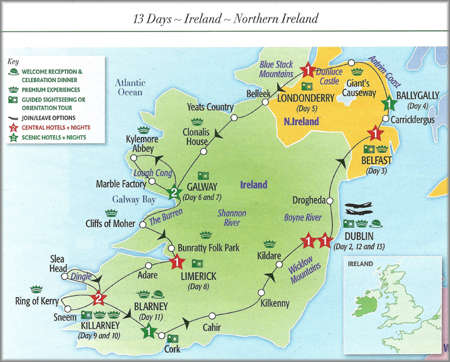

[ Home ] [ Travel ] [ Photography ] [ Pets ] [ Games] [ Rowing] [ Physics ]


A Visit to Ireland - Itinerary
Travel
Cruises
Past Cruises (Diaries)
Future Cruises
Rogues Galleries
Land Trips
Diaries (Land Trips)
Hawai'i - Big Island - 04'01
Hawai'i - Maui - 05'02
Hawai'i - Big Island - 04'03
Hawai'i - Kaua'i - 09'04
Hawai'i - Big Island - 04'06
Hawai'i - Maui - 04'06
Mainland China - 05'07
Phoenix, Arizona - 12'07
Greek Isles - 05'08
Hawai'i - Kaua'i - 09'08
Hawai'i - Big Island - 09'09
Hawai'i - Maui - 05'12
Hawai'i - Big Island - 04'13
Ireland - 08'13
Mexico - Cancun 11'13
France/Belgium/Lux 07'15
Hawai'i - Big Island - 05'17
England / Wales - 06'17
Hawai'i - Big Island - 09'19
Photography
Cameras
Underwater
Pets
Tara
Blackie
Whitey
Muffy
Ollie
Rusty
Fluffy
Rufus&Dufus
Games
Rowing
Physics
Trip Itinerary

| Day | Date | Description |
|---|---|---|
| 1,2 | Aug 9,10 | Flight to Dublin - Calgary => London (LHR) => Dublin, Marker Hotel, first Dublin dinner |
| 3 | Aug 11 | First day in Dublin - Walk to Grafton St, HO-HO bus to Guinness Storehouse, O'Connell St |
| 4 | Aug 12 | Second day in Dublin - Change hotels (DT), join tour group, visit to Trinity College and Book of Kells |
| 5 | Aug 13 | Dublin to Belfast - St. Kevin's (Glendalough), drive to Belfast, Europa Hotel, visit with Bill B. |
| 6 | Aug 14 | Belfast to Ballygally - Tour of Belfast, Titanic Museum, Carrickfergus, Ballygally Castle, Bill again |
| 7 | Aug 15 | Ballygally to Londonderry - Coastal drive, Giant's Causeway, City Hotel, walking tour of Derry, Peace Bridge |
| 8 | Aug 16 | Londonderry to Galway Bay - Belleek pottery, Sligo - lunch, Clonalis House, Connemara Coast Hotel, group dinner |
| 9 | Aug 17 | A full day in Galway Bay - Connemara Marble Factory, Connemara Peninsula, Kylemore Abbey, Galway |
| 10 | Aug 18 | Galway Bay to Limerick - Coastline drive, Cliffs of Mohir, Bunratty Castle Park - lunch, Limerick, George Hotel |
| 11 | Aug 19 | Limerick to Killarney - Drive around Dingle Penninsula, visit Adare, Dingle, Killarney, Towers Hotel |
| 12 | Aug 20 | A full day in Killarney - Church, horse jaunty, Ring of Kerry, Sneem - lunch, Katie Keirnam's Cottage - dinner |
| 13 | Aug 21 | Killarney to Cork (Blarney) - Drive to Cork, Blarney Castle - lunch, Blarney Golf resort, afternoon off |
| 14 | Aug 22 | Cork to Dublin - Drive to Dublin, castle at Cahir, Kilkenny Castle, Kilkenny, Kildare stud farm, DT again |
| 15 | Aug 23 | Dublin to Southampton - Goodbyes, Dublin => London (LHR) => Southampton, Premier Inn |